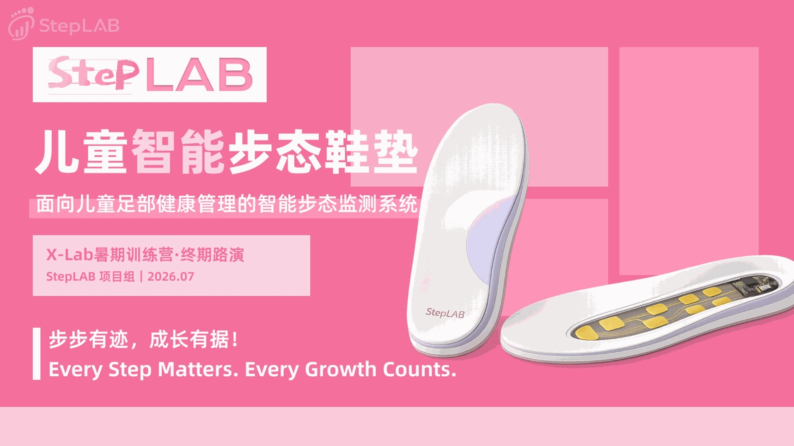
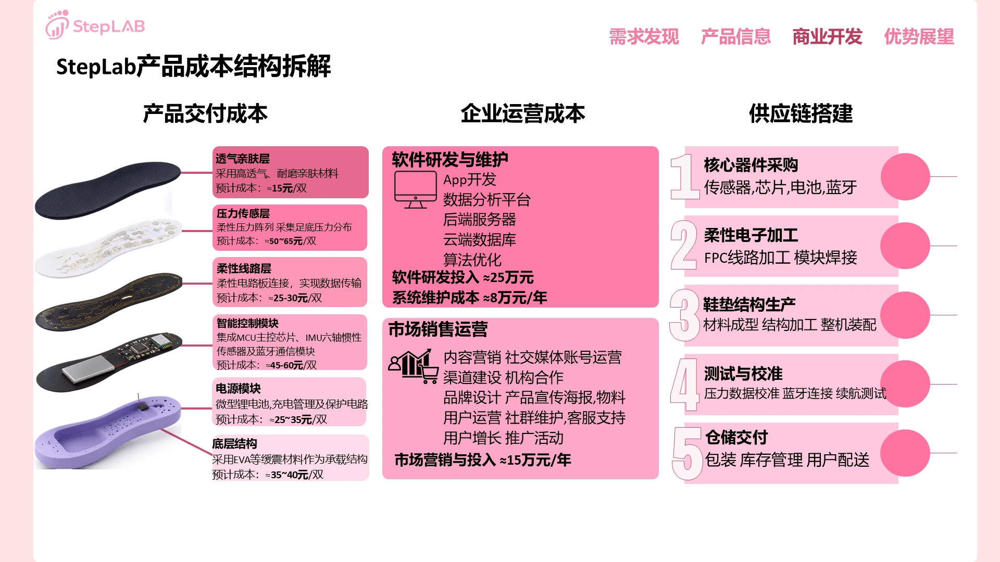
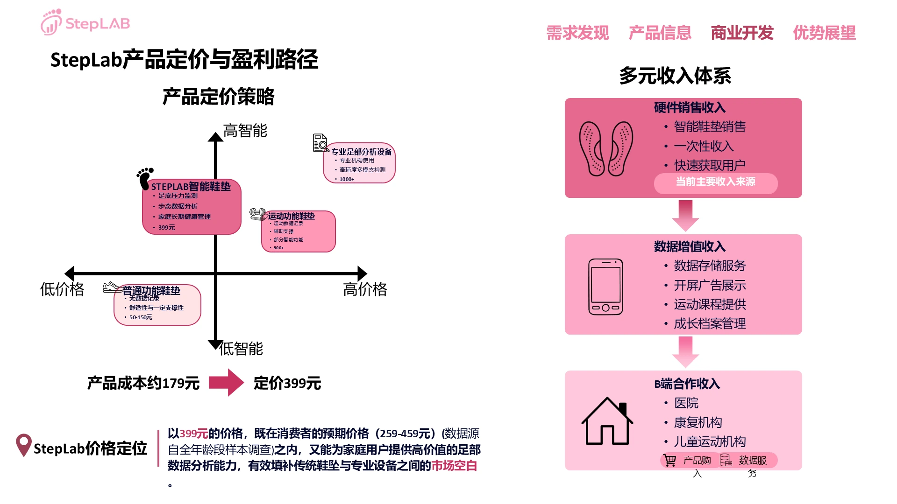
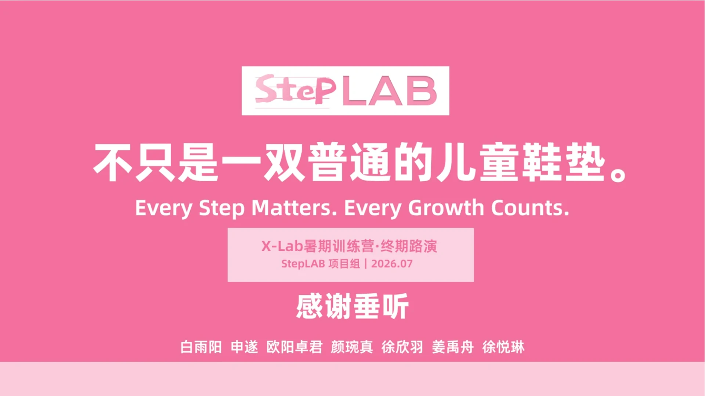

返回运营项目索引
返回运营项目索引StepLAB|儿童智能步态监测鞋垫
阅读项目文档 ↓StepLAB｜儿童智能步态监测鞋垫
步步有迹，成长有据。
孩子每天走路、跑跳，脚下的变化却不容易被看见。鞋底为什么总在一侧磨损？左右脚受力是否均衡？随着身高、鞋码和运动习惯变化，步态又会怎样改变？仅凭偶尔观察，家长往往难以获得连续、清晰的答案。
StepLAB面向6—12岁儿童及其家庭，探索将压力与运动传感器融入日常鞋垫，在孩子自然活动时记录足底受力与步态信息，并同步至家长端应用。项目计划通过压力分布、左右脚对比和长期趋势报告，把复杂数据转化为直观的成长记录，帮助家长理解一段时间内的变化。
从日常观察到关注提醒，再到训练建议与周期复测，StepLAB希望连接起持续的家庭关注流程。家长不仅能查看某一次记录，还能对照不同成长阶段、活动场景和训练前后的趋势，为必要时的专业咨询提供参考。随着孩子成长，项目还探索换码适配与核心电子模块复用，让长期使用更方便。
StepLAB 希望用更易理解的数据，让每一步成长都有迹可循。
了解项目：steplab.fun








项目文档
汇报逐页阅读
第 2 页
02.测得太少
需求发现：儿童足部发育、步态异常缺少一个低门槛、持续性、可反馈的解决方案。
核心痛点
需求验证
01
问题感知
行动困境
02
概念认可
03
01
看不出来
02
测得太少
03.效果模糊
03
效果模糊
48%
的家长
缺乏判断方法；
44%的家长不知何时干预；
发现异常但难以量化，
只能凭经验猜测
单点
低频
医院检查频率低；
无法覆盖日常
走路、跑跳中的长期变化
0
反馈
传统鞋垫仅提供静态支撑，
缺少复测依据，
家长不知道到底有没有改善效果
需求发现
产品信息
商业开发
优势展望
第 3 页
基础产品信息：一双"看得见"孩子足底受力的智能鞋垫
StepLAB
智能步态监测鞋垫
产品定义
产品形态
内置柔性传感器的智能鞋垫，放入孩子日常鞋中使用，不改变穿着习惯
目标场景
儿童日常走路、跑跳、运动中的足底压力与步态持续监测
核心定位
"看得见"——把家长模糊、偶发的观察，变成连续、可视化的数据记录
StepLAB
鞋垫
家长通过App查看孩子足底受力状况，异常时收到提醒
反馈模式
02.使用流程
将智能鞋垫放入孩子日常鞋中，首次使用时完成基础校准（个体化基线建立）
App自动生成趋势报告：足底压力分布、左右脚差异、足弓压力变化、内八/外八趋势
孩子日常走路、跑跳时，鞋垫自动采集足底压力与运动数据，通过BLE同步至手机App
当数据出现异常趋势时，App推送提醒，建议家长关注或带孩子进行专业检查
1
2
3
4
01.产品定义
需求发现
产品信息
商业开发
优势展望
第 4 页
「感知-分析-适配-动态」完整闭环，构筑产品壁垒
多模态传感，稳定采集足底数据
原始信号转化为可洞察的成长数据
适儿化设计，呵护儿童稳步成长
动态记录，形成长期成长档案
柔性压力传感器实施捕捉足底压力变化
六轴 IMU精准识别步态变化与运动状态
BLE低能耗通信支持长期佩戴与数据传输
柔性 FPC保证鞋垫柔韧性、耐弯折与可靠性
模块化电⼦仓易于维护升级，支持长期使用
基于儿童年龄与历史数据设置个体化基线
步态事件识别判断落地、支撑、推进等关键阶段
左右受⼒分析判断双足压力差异与异常趋势
行走、跑步、跳跃等运动状态区分
⻓期趋势识别捕捉成长过程中的变化
⼉童⾜型与尺码适配，贴合儿童成长需求
舒适度与耐弯折满足儿童高频运动与长期穿戴需求
可清洁结构设计适应日常使用环境
可替换⽀撑设计根据足部发育阶段进行调整
核心电子模块可复⽤，降低长期成本
积累不同年龄阶段、运动状态下的足部变化数据，
形成⼉童⻓期步态数据库
构建个体成长轨迹模型，支持更精确的异常识别与趋势预测
数据反馈优化算法，使用越久，产品理解能力越强
硬件
程序
产品
数据
从“测得到”到“看得懂”，再到“用得久”，StepLAB致力于陪伴孩子长期健康成长
需求发现
产品信息
商业开发
优势展望
第 5 页
足底动态监测
智能趋势分析
日常反馈管理
家长购买的不仅是一块带传感器的鞋垫，
而是一套长期有效的儿童足部健康管理方案
通过无感长期监测足底压力分布、步态周期等关键数据，将“走路姿势不好看”等主观经验判断转换为持续、客观的数据观察
精准识别左右脚受力不均、足部局部压力变化等细节，区别于单次静态检测，通过建立个性化基线与长期追踪，提供早期关注信号
趋势报告可视化、开启通知异常提醒等，让数据转换为直观可感的陪伴，降低判断门槛，帮助了解孩子发育状态
辅助训练调整
配备专业康复教练录制踮脚训练、足趾抓地、平衡稳定等训练视频，提供低门槛、可执行的家庭训练内容
需求发现
产品信息
商业开发
优势展望
第 6 页
持续复购
用数据变化与准确证明价值
目标用户与市场激发
健康预防型家长
关注足弓、体态和运动发育
希望低成本完成居家筛查与监测
获得“正常证明”或早期提醒
对孩子步态缺乏关注的家长
对孩子的成长有足够的物质投入，
但没有充足的精力和时间对孩子进行
日常观察。
运动与进阶专业家庭
孩子经常跑跳或参加专项运动
出现脚酸、膝部不适及稳定性问题
但检查并未出现明显的适应征
需要训练周期监测服务
04
03
02
01
体验转化
在检测体验中
把抽象需求变成可见结果
不依赖单纯广告获客，而是通过现实问题激发需求、专业背书建立信任，再以体验完成转化。
目标用户
从高意向家庭切入，建立“教育—信任—体验—复测”转化路径
专业信任
降低健康产品决策门槛，
医生、康复师和运动专家共创，
提供充分的案例与准确保障
问题教育
鞋底偏磨与走姿科普
让家长意识到潜在风险
需求发现
产品信息
商业开发
优势展望
市场规模
转化路径
第 7 页
透气亲肤层
采用高透气、耐磨亲肤材料
预计成本：≈15元/双
压力传感层
柔性压力阵列 采集足底压力分布
预计成本：≈50~65元/双
柔性线路层
柔性电路板连接，实现数据传输
预计成本：≈25-30元/双
智能控制模块
集成MCU主控芯片、IMU六轴惯性
传感器及蓝牙通信模块
预计成本：≈45-60元/双
电源模块
微型锂电池,充电管理及保护电路
预计成本：≈25~35元/双
底层结构
采用EVA等缓震材料作为承载结构
预计成本：≈35~40元/双
核心器件采购
传感器,芯片,电池,蓝牙
柔性电子加工
FPC线路加工 模块焊接
测试与校准
压力数据校准 蓝牙连接 续航测试
仓储交付
包装 库存管理 用户配送
产品交付成本
企业运营成本
供应链搭建
StepLab产品成本结构拆解
软件研发与维护
市场销售运营
App开发
数据分析平台
后端服务器
云端数据库
算法优化
软件研发投入 ≈25万元
系统维护成本 ≈8万元/年
内容营销 社交媒体账号运营
渠道建设 机构合作
品牌设计 产品宣传海报,物料
用户运营 社群维护,客服支持
用户增长 推广活动
市场营销与投入 ≈15万元/年
鞋垫结构生产
材料成型 结构加工 整机装配
需求发现
产品信息
商业开发
优势展望
第 8 页
STEPLAB智能鞋垫
足底压力监测
步态数据分析
家庭长期健康管理
399元
普通功能鞋垫
运动功能鞋垫
运动数据记录
辅助支撑
部分智能功能
500+
专业机构使用
高精度多模态检测
1000+
专业足部分析设备
产品定价策略
产品成本约179元
定价399元
StepLab价格定位
以399元的价格，既在消费者的预期价格（259-459元）(数据源自全年龄段样本调查)之内，又能为家庭用户提供高价值的足部数据分析能力，有效填补传统鞋坠与专业设备之间的市场空白。
当前主要收入来源
产品购入
数据服务
低价格
高价格
高智能
低智能
无数据记录
舒适性与一定支撑性
50-150元
StepLab产品定价与盈利路径
多元收入体系
硬件销售收入
智能鞋垫销售
一次性收入
快速获取用户
数据增值收入
数据存储服务
开屏广告展示
运动课程提供
成长档案管理
B端合作收入
医院
康复机构
儿童运动机构
需求发现
产品信息
商业开发
优势展望
第 9 页
01｜儿童产品适配
面向 6—12 岁儿童足型与运动场景
强调舒适,日常可穿戴
支持儿童成长换码与核心模块复用
02｜产品与服务闭环优势
StepLAB 不只告诉家长“发生了什么”，还帮助用户理解变化、给出可靠的行动建议。
03｜长期数据模型占有
同一儿童的纵向成长变化
不同年龄阶段步态差异
训练前后受力趋势对比
支撑调整前后效果对比
走路、跑步等不同场景数据
竞争定位
单个足弓支撑结构容易被复制，但将儿童硬件适配、趋势预警、专业评估、周期复测连接成完整系统，更难被复制。
竞争矩阵
竞争格局与核心优势
优势不在单个传感器，而在儿童步态健康管理闭环
三类核心优势
普通鞋垫主要提供静态支撑，专业矫形鞋垫依赖低频线下服务，足压设备只能完成一次性检测，智能穿戴则缺少儿童足部健康闭环。
StepLAB 通过日常穿戴，把监测、提醒、训练与复测连接起来。
资料来源：Dr. Kong、PowerStep、Moticon OpenGo、Tekscan F-Scan GO 官方产品资料及 NURVV 产品公开资料
需求发现
产品信息
商业开发
优势展望
第 10 页
StepLAB 先以消费级步态监测产品完成市场验证，再根据资金、注册能力和合作资源选择两条发展路径：自主推进医疗器械注册，建立专业干预闭环；或向童鞋及足部健康品牌输出智能模组、算法和数据服务，快速实现规模化。
V2路径B
品牌合作：快速实现产品规模化
合作对象
成熟的儿童健康鞋品牌
希望进入中国市场的海外足部健康品牌
可能的合作形式
1.智能模组供应：StepLAB提供传感器、IMU、蓝牙及算法模组，由合作品牌集成到鞋垫或童鞋中。
2. 算法与软件授权：品牌使用StepLAB步态分析算法、家长端报告和数据平台，按设备量或服务期限支付授权费用。
3. 渠道捆绑：StepLAB鞋垫与合作品牌童鞋、机能鞋或支撑鞋垫组合销售，形成产品套装。
产品迭代与未来展望
从智能鞋垫出发，构建儿童步态健康数据与服务平台
8—12 个关键足底压力点监测；IMU 站立、行走与跑步识别；BLE 数据同步；左右受力与步态趋势反馈；基础异常趋势提醒
核心功能
让家长第一次持续看见儿童日常步态变化。
用户价值
不进行医疗诊断，不承诺自动矫正，不配置独立联网定位。
产品边界
正式价格：299—399元
验证指标：试穿完成率、付费率、30天留存、报告查看率
商业验证
V1｜看得见
验证
持续监测价值
周期复测服务
医院及康复机构合作
机构端系统与数据服务
V2路径A
自主医疗化：构建专业干预闭环
发展方式
按二类医疗器械路径推进注册，自主研发与智能鞋垫配套的足弓支撑或矫形产品。
理想用户闭环
日常监测 → 趋势预警 → 医院评估 → 辅助干预 → 周期复测 → 支撑
商业模式
智能监测鞋垫销售
配套支撑插件或矫形器销售
需求发现
产品信息
商业开发
优势展望
团队项目说明
第 1 步｜先把项目和这次视频认清楚
01 项目叫什么，现在做到哪一步
项目正式名称/简称：
StepLAB儿童智能步态监测鞋垫 / StepLAB
本次资料版本/日期：
当前阶段及已完成范围：
设计稿阶段、无实体样品；已有产品效果图与App网页交互展示，网页数据为示例。
02 视频在哪里、怎样被观看
观看场合（展览/路演/教学/其他）：
训练营成果展；面向社会观众。
屏幕横竖、比例及观看距离：
横屏16:9；具体屏幕尺寸及观看距离：
现场能否放音、需要哪种语言：
可放音；中文旁白、中文字幕及配乐。
硬性时长上限；没有则写“按内容确定”：
按内容确定
需要交付的版本及日期：
第 2 步｜让制作方知道讲给谁、讲完留下什么
03 主要观众是谁，他们最想知道什么
主要观众（具体到身份）：
训练营成果展的社会观众，主要为首次了解项目的非专业公众。
他们已经知道什么：
了解鞋垫与儿童走路问题；不预设传感器、步态算法或医疗知识。
他们最关心的问题1：
家长除了偶发观察或单次检测，还能怎样了解孩子日常步态变化？
他们最关心的问题2：
设计方案怎样形成“监测—提醒—训练建议—复测”流程，能帮助家长什么？
还需兼顾的其他观众：
兼顾6—12岁儿童家长、训练营师生及潜在机构／品牌合作方。
04 看完必须记住哪三件事
必须记住1：观众应理解
面向6—12岁儿童家庭，关注日常足底受力与步态变化的连续观察需求。
必须记住2：观众应理解
拟通过鞋垫传感、BLE同步和App报告，连接观察、提醒、训练建议与复测。
必须记住3：观众应理解
V1不诊断、不自动矫正、不含独立联网定位。
看完后希望观众做什么，或能复述什么：
能复述对象、使用流程和当前阶段；愿意了解设计或后续验证计划。
若篇幅有限，最不能删的是哪一点、为什么：
保留产品流程与设计阶段说明：这是理解方案价值及完成边界的基础。
第 3 步｜先用平实语言说清项目，再列全用户
05 怎样用一句话介绍这个项目
为谁：
6—12岁儿童及其家庭，主要决策和查看数据者是家长。
解决什么问题：
家长难持续量化观察足底受力和步态变化，亦缺少长期对照依据。
主要通过什么方式：
拟用柔性压力传感器、六轴IMU、BLE及家长端App，结合个体基线和趋势分析。
最后得到什么：
希望获得可理解的受力与步态趋势、关注提醒、训练建议及长期对照记录。
合成一句话：
面向6—12岁儿童家庭，拟通过智能鞋垫和App，帮助持续观察足底受力与步态趋势。
06 本片必须讲到哪些产品使用者
用户类别1/正在完成的任务/本片主次：
I01 健康预防型家庭：持续关注儿童日常足底受力与步态变化；主线。
用户类别2/正在完成的任务/本片主次：
I02 日常观察时间有限的家庭：用趋势汇总与提醒辅助持续关注；次线。
用户类别3/正在完成的任务/本片主次：
I03 运动与进阶专业家庭：观察训练周期内受力变化；次线。
还需介绍的用户（可继续加行）：
儿童是穿戴者；医院、康复及儿童运动机构是潜在合作方，非既有客户。详见续页。
准备先讲哪一类，为什么：
建议先讲I01：与原稿“从高意向家庭切入”一致，便于带入完整使用流程。
第 4 步｜跟着填一张完整用户逻辑卡
07 用户原来怎么做，具体卡在哪
内容编号/标题：
I01 / 健康预防型家庭的日常步态观察（另见I02、I03续页）。
谁在什么场景下，要完成什么任务：
家长关注6—12岁孩子日常走路、跑跳，希望了解足底受力与步态变化。
原来使用什么方法或工具：
凭走姿、鞋底磨损和孩子描述观察，有需要时到专业机构检查。
具体在哪一步受阻：
难把零散观察变成可持续比较的数据；专业检查无法覆盖全部日常活动。
这个阻碍造成什么后果：
缺少长期对照依据，难判断何时进一步咨询及变化是否持续。
依据在哪里；若只是设想请写明：
08 项目怎样帮助他，最后得到什么
沿用内容编号：
I01
用户先做什么/提交什么：
拟将鞋垫放入日常鞋，按App引导完成基础校准，建立个体基线。
项目接着处理什么（按先后写）：
拟按“压力／运动采集→BLE同步→基线和趋势分析→报告／提醒”处理。
用户最终得到什么具体结果：
目标是获得足底压力、双足差异与步态趋势记录，必要时提示寻求专业评估。
哪些已验证，哪些只是设计目标：
已具备效果图及App交互设计展示；采集、同步、分析与健康相关效果均尚未样品验证。
需要软件补充的步骤、限制或演示：
第 5 步｜解释差异，也保留做事过程
09 与原有做法相比改变了什么
比较维度（只选一个）：
日常观察的连续性；其他差异见续页OP09。
原有做法/对照对象怎样处理：
原稿对照：肉眼偶发观察、普通鞋垫静态支撑、线下阶段性足压检查。
本项目准备或已经怎样处理：
拟以日常穿戴采集和App趋势记录衔接观察、提醒、训练建议及复测。
这种差异对哪类用户有何价值：
帮助家长积累同一儿童的长期对照信息；尚不主张优于专业检测。
依据/适用条件/当前状态：
PPT第2—5、9页；处在方案定位阶段。
10 团队做过什么，为什么调整
过程发生的日期/阶段：
团队实际做了什么：
进行了需求调研，结合技术现实进行了初步的可行性验证，并通过商业规模估测等商业验证形成《StepLAB终期汇报》11页文件，包含产品定义、技术设计、商业与路线内容。
发现、反馈或遇到的问题：
因此调整了什么；若未调整写原因：
现有材料呈现需求、产品与商业设计；没有可核对的实体试穿改版，故不补造。
过程证据（记录、照片、版本等）位置：
A01原稿核对版第2—10页；A03原文索引；A04效果图；A09—A14网页／App展示。
资料缺口与补充人：
第 6 步｜把成果和数字的性质写明白
11 哪些成果已完成，哪些仍在计划
已经完成的具体工作或交付物：
已完成需求调研与产品／商业设计表达；已有产品效果图、网站及App交互设计；实体样品正在计划中
可查看的成果文件/版本/日期：
A01《StepLAB终期汇报》尾页2026.07；A04效果图；A09—A14网页核读日2026-11-11。
哪些效果已有证据，证据在哪里：
尚未完成或未验证的部分：
实体样品、传感集成、硬件与App真实联动、准确性／穿戴／续航及健康效果验证。
下一步准备验证什么问题：
按V1路线验证日常持续监测价值，并观察试穿完成率、付费率、30天留存及报告查看率。
12 每个重要数字从哪里来、代表什么
数字或含数字的完整表述：
6—12岁：拟服务的目标儿童年龄范围；全部关键数字详见OP12数字台账。
单位/时间期间/对象或分母：
单位为岁；对象是目标穿戴儿童；不是已验证用户样本年龄。
性质（实测/外部引用/估算/目标）：
目标（产品适配范围），非实测效果。
原始来源、页码或数据表、发布日期：
PPT第9页“儿童产品适配”；PPT尾页标注2026.07。
计算方法或关键假设：
依据产品定位提出；不同年龄／尺码适配方式和适用条件尚待验证。
是否与其他材料冲突；由谁核对：
第 7 步｜商业内容：涉及才展开
13 谁付费、买到什么、价格怎么算
本片是否涉及收费；不涉及的原因：
涉及；硬件销售、数据增值与B端合作均为商业设计，尚无实体样品和已售收入。
谁使用/谁购买/买到什么：
儿童穿戴、家长拟购买并查看App；机构／品牌为后续合作对象。
本档名称/价格/币种/收费周期：
智能鞋垫 / 拟定售价399元 / 人民币 / 一次性购入（以PPT第8页为准）。
人数或用量/核心权益/使用限制：
拟提供鞋垫及足底压力、步态趋势等App体验；未单列账号、用量与服务期限档位。
价格性质（已售/拟定）及原表位置：
拟定，非已售；用户确认采用PPT第8页：售价399元、估算产品成本约179元。
还需提交的其它档位、差异或待核口径：
数据存储、开屏广告、运动课程、成长档案；医院／康复／儿童运动合作；未制定其它公开价目。
14 用户从哪里来、为什么持续使用
本片是否涉及增长或留存；不涉及的原因：
涉及：按原稿介绍“教育—信任—体验—复测”规划，不将规划写成已获客或已复购。
用户类别/从什么渠道接触项目：
I01高意向家庭：科普鞋底偏磨／走姿问题，规划通过专业协作与后续产品体验建立认知。
第一次使用时得到什么价值：
现阶段可看产品效果图及App设计展示，理解压力、双足受力和趋势报告；无样品体验。
为什么以后还会回来或继续购买：
规划以成长档案、趋势对照、训练／复测和成长换码形成持续价值，尚待验证。
传播、推荐或社区激励怎样发生：
问题科普、专业协作及用户自愿推荐；未设计明确的奖励或社区积分规则。
哪些已经发生，哪些是计划；依据在哪里：
第 8 步｜排清下一步，防止重要内容遗漏
15 下一阶段先做什么，如何判断完成
是否需要介绍未来规划；不涉及的原因：
需要：先验证消费级持续监测价值，再按资源选择V2方向；均为计划。
阶段/预计时间：
准备完成的具体动作：
拟开发压力采集、IMU状态识别、BLE同步、双足／步态趋势报告与基础异常趋势提醒。
预期交付物或用户结果：
目标交付可试穿样品与配套App／报告；范围以技术确认后的计划为准。
怎样判断完成（指标或检查方式）：
V1检查试穿完成率、付费率、30天留存、报告查看率；目前均为待开展的验证指标。
前提条件/尚需资源/当前依据：
16 原稿哪些内容必须讲，哪些可省略
内容编号/具体要讲什么：
I10 / 需求、产品机制、服务、用户、成本、定价、竞争与V1／V2路线均逐项列入续页。
原稿文件及页码/文档位置：
A01《StepLAB终期汇报》第1—11页；图像文字已核读，完整清单见续页。
本版范围（必须讲/可压缩/不讲）：
必须讲：对象、需求、流程、设计阶段、V1边界；商业与路线按细项完整交底，可压缩呈现。
为什么这样选择：
对应文字、图表或素材编号A：
A01 原稿核对版；03 全文索引；04 效果图；05 尾页；06 标志；09—14 网页及App。
需要软件核对或补充的内容：
第 9 步｜交出项目图像与审美依据
17 哪些图文最能识别项目
必须保留的名称、标志、颜色或角色：
保留StepLAB名称与PPT标志；粉色、白色为主，搭配产品浅紫色；风格沿用原稿。
最能代表当前项目的主图/文件位置：
A04：可用素材/A04_StepLAB产品设计效果图.png；明确标注设计效果图。
使用场景、过程照片或其它关键图文：
A07结构设计示意；A09网站；A10—A14为今日记录、趋势、训练、报告、档案五页App设计。
素材版本、来源及对应内容I编号：
A01 PPT及A04用户提供效果图；A09—A14来自steplab.fun，核读日2026-11-11。
可用范围（展览/公开传播/仅参考）和需遮挡内容：
缺少什么原图或原片，由谁补：
已有独立效果图、标志、结构示意与App截图；当前无实体样品照片或实测录像，毋须补造。
18 希望的观感与具体参考
希望观众感到什么，为什么适合项目：
清晰、亲和、可信；既呈现儿童成长主题，也让社会观众看懂数据观察流程。
参考图/视频链接或文件：
具体参考它的什么（配色、构图、动作、声音等）：
沿用粉白、浅紫；产品与App并置；顺序讲清穿戴、采集、同步、报告及关注提醒。
不希望照搬的部分：
不照搬密集段落；不把效果图当实物照片，不把App示例数值当真实监测结果。
项目适合的视觉动作与声音方向：
足底受力与趋势线示意，配中文旁白、完整字幕与轻配乐；用动作串起产品流程。
不应出现的风格或误解：
不制造儿童健康焦虑；不承诺诊断、自动矫正或独立联网定位；保持设计阶段说明。
第 10 步｜收好结尾，交出可打开的资料包
结尾希望留下的一句话：
“步步有迹，成长有据。” / Every Step Matters. Every Growth Counts.；注明设计阶段。
StepLAB项目组｜成员：白雨阳、申遂、欧阳卓君、颜婉真、徐欣羽、徐悦琳、姜禹舟；目前产品处在设计阶段。
项目名、术语、缩写及读音：
StepLAB：step lab（/step læb/）
必须保持的说法/容易被误解的承诺：
设计图／App示例不代表实测；售价399元、成本约179元均为方案口径；市场规模标注原稿估算。
20 资料位置、交接与后续事项
资料包文件夹或可访问链接：
当前说明文档的名称/版本/日期：
素材A编号/文件位置/对应I编号：
另一个素材A编号/文件位置/对应I编号：
A04 / 可用素材/A04_StepLAB产品设计效果图.png；A09—A14 / 网站及五页App设计。
尚缺内容/补充人/预计补齐时间：
运营与软件共同确认的口径/仍有分歧处：
本次交付人/日期；是否检查链接可打开：
续页使用说明与已确认口径
项目阶段
设计稿阶段，尚未产出实体样品；已提供产品效果图及可访问的App网页交互设计展示，网页数据均为示例。
展示要求
训练营成果展，面向社会观众；横屏16:9、可放音、中文旁白与完整字幕。
统一商业口径
以PPT第8页为准：拟定售价399元、估算产品成本约179元。第7页拆项预算与第10页旧价仅在原稿索引中保留。
调研与市场
素材与入口
资料边界
OP07＋OP08 用户逻辑卡｜I01 健康预防型家庭
每类重要用户独立一组；两题沿用同一I编号。
OP07 旧方法、卡点与后果
内容编号／标题
I01 / 健康预防型家庭
谁在什么场景下，要完成什么任务
家长关注6—12岁儿童足弓、体态和运动发育，希望在日常走路、跑跳时持续了解足底受力及步态变化。
原来使用什么方法或工具
设定场景：看孩子走姿、看鞋底磨损、听孩子描述，必要时向医生或康复专业人士咨询。
具体在哪一步受阻
零散观察难量化、难在相同条件下长期比较；阶段性线下检查不能覆盖所有日常活动。
这个阻碍造成什么后果
家长缺少长期对照信息，难理解何时应进一步关注；这是需求假设，不是已验证的样本结论。
依据在哪里；若只是设想请写明
OP08 项目流程与目标结果
沿用内容编号
I01
用户先做什么／提交什么
拟在日常鞋内放入鞋垫，按App引导登记适配所需信息并完成基础校准；实际所需字段及校准条件待技术确认。
项目接着处理什么（按先后写）
拟采集压力与IMU运动信号→经BLE向手机同步→建立个体基线→分析双足受力和步态趋势→呈现报告及基础异常趋势提醒。
用户最终得到什么具体结果
目标交付可理解的足底受力、双足差异与趋势报告；出现持续关注信号时建议寻求专业评估，不给出医疗诊断。
哪些已验证，哪些只是设计目标
已提供效果图与App网页交互设计，尚无实体样品；未验证穿戴、采集、同步、算法或健康效果。
需要软件补充的步骤、限制或演示
尚待研发验证的细节：校准、连接、离线与同步、缺失数据、提醒阈值、App设计与示意数据标注。（App可参考A10—A14，均为示例数据。）
OP07＋OP08 用户逻辑卡｜I02 日常观察时间有限的家庭
每类重要用户独立一组；两题沿用同一I编号。
OP07 旧方法、卡点与后果
内容编号／标题
I02 / 日常观察时间有限的家庭
谁在什么场景下，要完成什么任务
家长对孩子成长有投入，但难抽出足够时间逐次观察走路及运动，希望借助简明摘要持续关注。
原来使用什么方法或工具
设定场景：偶尔看走姿、询问孩子感受、在明显不适时再咨询；不是已有用户使用记录。
具体在哪一步受阻
观察分散、缺少统一记录，难分清一次性的波动与持续变化。
这个阻碍造成什么后果
关注可能不连续，也缺少可供专业沟通的日常趋势资料；未提供发生比例。
依据在哪里；若只是设想请写明
PPT第6页第二类家长，第3、5页报告和提醒设计；属于明确设定的用户场景。
OP08 项目流程与目标结果
沿用内容编号
I02
用户先做什么／提交什么
拟完成初次适配、校准及手机连接，让孩子按产品适用条件穿戴；家长在App查看汇总。
项目接着处理什么（按先后写）
拟记录日常受力与运动数据→同步及趋势汇总→可视化摘要→出现需关注的趋势时提醒。
用户最终得到什么具体结果
目标是减少整理零散观察的负担，得到阶段趋势与关注提示；不能承诺全天覆盖、零遗漏或异常必检出。
哪些已验证，哪些只是设计目标
全为设计目标；无样品、真实家庭试用或提醒有效性数据。
需要软件补充的步骤、限制或演示
尚待研发验证的细节：蓝牙有效范围、后台同步、佩戴记录、报告频率、提醒开关与通知条件。（App可参考A10—A14，均为示例数据。）
OP07＋OP08 用户逻辑卡｜I03 运动与进阶专业家庭
每类重要用户独立一组；两题沿用同一I编号。
OP07 旧方法、卡点与后果
内容编号／标题
I03 / 运动与进阶专业家庭
谁在什么场景下，要完成什么任务
孩子经常跑跳或参加专项运动，家长希望了解训练周期内步态、受力与稳定性相关趋势，并在需要时与专业人士沟通。
原来使用什么方法或工具
设定场景：凭孩子感受、训练观察与阶段性专业评估判断变化。
具体在哪一步受阻
训练前后与不同活动场景下的数据难保持连续，难以形成同一儿童的长期比较。
这个阻碍造成什么后果
家长与专业人士缺少可对照的日常信息；不据此推断孩子已有疾病或适合某类干预。
依据在哪里；若只是设想请写明
PPT第6页运动家庭、第5页训练建议、第9页训练前后趋势；无真实运动家庭个案。
OP08 项目流程与目标结果
沿用内容编号
I03
用户先做什么／提交什么
拟在适配鞋中穿戴并完成校准，按专业建议安排活动；训练记录是否手动录入待技术确认。
项目接着处理什么（按先后写）
拟区分站立／行走／跑步等状态→记录双足受力与步态趋势→按相近活动条件作周期对照→展示趋势，并提供适用的训练内容。
用户最终得到什么具体结果
目标是获得训练周期趋势记录及与专业人士讨论的依据；家庭训练内容拟包含踮脚、足趾抓地与平衡稳定练习。
哪些已验证，哪些只是设计目标
未开展样品训练对照；尚不能证明训练有效、预防损伤、改善足弓或矫正步态。
需要软件补充的步骤、限制或演示
尚待研发验证的细节：活动区分能力、前后对照条件、训练内容来源／适用条件、专业合作与演示素材。（App可参考A10—A14，均为示例数据。）
OP09 差异记录；OP10 实际工作过程
比较是设计定位；不把设计目标写成已经完成的产品效果。
OP09-01｜连续观察
比较维度
连续观察
原有做法／对照
PPT对照肉眼偶发观察及阶段性足压检查。
StepLAB设计
StepLAB拟通过日常鞋内穿戴与趋势记录积累纵向数据。
对用户的价值
I01、I02家长可更直观理解变化；不能据此声称替代或超过专业检测。
依据／条件／状态
PPT第2、3、9页；设计比较，未实测。
OP09-02｜反馈与服务流程
比较维度
反馈与服务流程
原有做法／对照
原稿将普通鞋垫概括为提供静态支撑。
StepLAB设计
拟连接监测、趋势提醒、训练建议和复测。
对用户的价值
I01、I03家庭可获得连续观察与行动建议之间的衔接。
依据／条件／状态
PPT第5、9页；服务、专业评估与复测尚未落地。
OP09-03｜儿童成长适配
比较维度
儿童成长适配
原有做法／对照
原稿对照普通鞋垫及一般智能穿戴；未给出同条件对比数据。
StepLAB设计
拟面向6—12岁儿童，支持尺码成长、可替换支撑与核心电子模块复用。
对用户的价值
希望改善长期适配和更换成本；舒适、耐弯折、清洁与成本效果待样品验证。
依据／条件／状态
PPT第4、9页；设计目标，不能写成“更舒适／成本更低”的实测结论。
OP09-04｜家庭价格定位
比较维度
家庭价格定位
原有做法／对照
原稿对照普通功能鞋垫50—150元、运动功能鞋垫500+、专业设备1000+。
StepLAB设计
拟定售价399元，估算产品成本约179元；按用户确认以第8页为准。
对用户的价值
依据／条件／状态
PPT第8、9页；设计和定价定位，非已售、实测精度或临床效果对比。
OP10-01｜已完成的实际设计与表达
日期／阶段
实际完成
发现与反馈
设计回应／调整
通过鞋垫采集、家长端趋势、提醒及训练建议构成规划闭环。未提供可核对的前后改版链条，不补造迭代事件。
证据位置
当前不存在的证据
尚无实体样品，故无实际试穿照片、实测采集录像或健康效果对照。网页可交互不等于硬件已联调。
OP12 关键数字台账
每行是一条独立OP12记录，覆盖单位／对象／期间、性质、原始来源、计算或假设、统一口径。原稿统计与估算按用户确认直接采用。
数字记录（续表会自动重复表头）
编号／数字完整表述
单位、期间、对象／分母
性质
来源／位置
计算方法或假设
统一口径／使用说明
N01｜48%的家长缺乏判断方法
按团队统计口径直接采用。
N02｜44%的家长不知何时干预
按团队统计口径直接采用。
N03｜6—12岁
岁；目标穿戴儿童年龄。
目标。
PPT第9页。
产品适配定位，非已测人群。
产品目标年龄范围；具体尺码与适用条件进入样品阶段验证。
N04｜8—12个关键足底压力点
个；拟定V1采集点位，单只／双脚合计由后续硬件方案定义。
目标。
PPT第10页。
未有传感器布局、器件选型或样品记录。
设计目标点数；实际布局与覆盖范围进入样品阶段明确。
N05｜六轴IMU
轴；拟用惯性传感器的规格，非精度指标。
目标（设计选型）。
PPT第4、7页。
具体芯片、频率、量程尚待明确。
设计选型；六轴不等于已验证的精度指标。
N06｜透气亲肤层约15元／双
人民币元／双；原稿材料预算。
估算。
PPT第7页。
材料与量产条件未定，不等于采购报价。
原稿结构预算明细保留；正式成本口径已按第8页约179元采用，不以本项重算定价。
N07｜压力传感层约50—65元／双
人民币元／双；原稿材料预算。
估算。
PPT第7页。
采集点数及器件方案未定。
原稿结构预算明细保留；正式成本口径已按第8页约179元采用，不以本项重算定价。
N08｜柔性线路层约25—30元／双
人民币元／双；原稿材料预算。
估算。
PPT第7页。
FPC尺寸、层数、加工条件待定。
原稿结构预算明细保留；正式成本口径已按第8页约179元采用，不以本项重算定价。
N09｜智能控制模块约45—60元／双
人民币元／双；含MCU、IMU与蓝牙模块的原稿预算。
估算。
PPT第7页。
尚无BOM和供应商报价；是否含焊接需确认。
原稿结构预算明细保留；正式成本口径已按第8页约179元采用，不以本项重算定价。
N10｜电源模块约25—35元／双
人民币元／双；电池及充电保护预算。
估算。
PPT第7页。
容量、续航、充电方式未验证。
原稿结构预算明细保留；正式成本口径已按第8页约179元采用，不以本项重算定价。
N11｜底层结构约35—40元／双
人民币元／双；EVA等承载结构预算。
估算。
PPT第7页。
结构、厚度与批量待定。
原稿结构预算明细保留；正式成本口径已按第8页约179元采用，不以本项重算定价。
N12｜第7页六项材料预算相加约195—245元／双
元／双；仅对原稿结构拆项作算术说明。
估算（旧拆项算术和）。
PPT第7页；本次计算日期2026-11-11。
15+50+25+45+25+35=195；15+65+30+60+35+40=245。
N13｜产品成本约179元
人民币元；原稿第8页产品成本口径。
估算。
PPT第8页；用户确认优先于第7页拆项预算。
设计阶段估算，不是已生产产品实测成本；按原稿采用，不自行推导毛利。
已确认采用179元；与第7页不同的数字仅保留原稿历史说明，无需再核对。
N14｜软件研发投入约25万元
人民币万元；一次性／阶段及预算覆盖期原稿未另列。
估算。
PPT第7页。
App、平台、后端、数据库与算法的人员及工期依据在后续实施中细化。
保留原稿预算，标注估算；非实际已发生支出。
N15｜系统维护成本约8万元／年
人民币万元／年；用户量、服务器规模与起算年原稿未另列。
估算。
PPT第7页。
需明确云资源、人工及运维服务范围。
保留原稿预算，标注估算；非实际已发生支出。
N16｜市场营销投入约15万元／年
人民币万元／年；目标年份及渠道预算原稿未另列。
估算。
PPT第7页。
科普内容、渠道、物料、客服、推广预算尚无明细。
保留原稿预算，标注估算；非实际已发生支出。
N17｜拟定售价399元
人民币元；消费级智能鞋垫一次性购入的原稿定价。
目标（拟定价格）。
PPT第8页；用户确认本次采用。
当前无实体样品，不表示已售价格。
已确认以第8页为准，不再使用第10页区间作为现行定价。
N18｜原稿V1价格区间299—399元
人民币元；第10页历史设计口径及第6页市场测算假设。
目标／估算基础（历史口径）。
PPT第6、10页；当前售价以第8页399元为准。
保留原稿市场规模所用测算基础；不能把区间解释为当前多档价格。
N19｜消费者预期价格259—459元
按团队确认统计口径采用，不公开原始记录。
N20｜普通功能鞋垫50—150元
人民币元；规格、单只／双、品牌、地区、价格日期原稿未进一步列明。
外部引用（原稿竞品定位）
PPT第8页；第9页仅列品牌／产品资料名称。
须取得可比较SKU、渠道与价格截面。
按原稿列入定位比较，不将跨产品类别的价格差异当成精度或疗效证据。
N21｜运动功能鞋垫500+
原稿未标币种／计价单位；按原稿价格定位展示。
外部引用（原稿竞品定位）
PPT第8页。
具体产品、功能和报价时间缺失，不自动补成“500元／双”。
按原稿列入定位比较，不将跨产品类别的价格差异当成精度或疗效证据。
N22｜专业足部分析设备1000+
原稿未标币种、设备／服务单位与租购条件。
外部引用（原稿竞品定位）
PPT第8页。
设备与家庭鞋垫不是同类交付，不能直接比较精度或替代关系。
按原稿列入定位比较，不将跨产品类别的价格差异当成精度或疗效证据。
N23｜30天留存
天；V1拟观察的留存窗口，不是30%或已实现结果。
目标（验证指标）。
PPT第10页。
后续验证时定义有效使用行为、观察起点与分母；原稿未设阈值。
N24｜67%观察到异常
比例%；相关受访家长，按原稿对应题目口径；不公开样本量。
按团队统计口径直接采用；不同题目比例不相加，也不反推统一分母。
N25｜走路易疲劳36%
比例%；相关受访家长，按原稿对应题目口径；不公开样本量。
按团队统计口径直接采用；不同题目比例不相加，也不反推统一分母。
N26｜鞋底偏磨30%
比例%；相关受访家长，按原稿对应题目口径；不公开样本量。
按团队统计口径直接采用；不同题目比例不相加，也不反推统一分母。
N27｜步态异常23%
比例%；相关受访家长，按原稿对应题目口径；不公开样本量。
按团队统计口径直接采用；不同题目比例不相加，也不反推统一分母。
N28｜提醒姿势51%
比例%；相关受访家长，按原稿对应题目口径；不公开样本量。
按团队统计口径直接采用；不同题目比例不相加，也不反推统一分母。
N29｜更换鞋子46%
比例%；相关受访家长，按原稿对应题目口径；不公开样本量。
按团队统计口径直接采用；不同题目比例不相加，也不反推统一分母。
N30｜继续观察37%
比例%；相关受访家长，按原稿对应题目口径；不公开样本量。
按团队统计口径直接采用；不同题目比例不相加，也不反推统一分母。
N31｜就医检查38%
比例%；相关受访家长，按原稿对应题目口径；不公开样本量。
按团队统计口径直接采用；不同题目比例不相加，也不反推统一分母。
N32｜认可智能鞋垫价值81%
比例%；相关受访家长，按原稿对应题目口径；不公开样本量。
按团队统计口径直接采用；不同题目比例不相加，也不反推统一分母。
N33｜改善体态53%
比例%；相关受访家长，按原稿对应题目口径；不公开样本量。
按团队统计口径直接采用；不同题目比例不相加，也不反推统一分母。
N34｜提升舒适52%
比例%；相关受访家长，按原稿对应题目口径；不公开样本量。
按团队统计口径直接采用；不同题目比例不相加，也不反推统一分母。
N35｜早期发现51%
比例%；相关受访家长，按原稿对应题目口径；不公开样本量。
按团队统计口径直接采用；不同题目比例不相加，也不反推统一分母。
N36｜超过60%的家长观察到相关现象
比例%；相关受访家长，按原稿对应题目口径；不公开样本量。
按团队统计口径直接采用；不同题目比例不相加，也不反推统一分母。
N37｜约81.38%的家长认可产品价值
比例%；相关受访家长，按原稿对应题目口径；不公开样本量。
按团队统计口径直接采用；不同题目比例不相加，也不反推统一分母。
N38｜约1.05—1.10亿名6—12岁儿童
人数；中国目标年龄儿童的原稿人口估计。
估算（原稿估算）。
PPT第6页内嵌市场规模图image20；用户确认沿用。
第6页市场图的TAM人口基础。
N39｜TAM约300—440亿元
人民币亿元；理论潜在市场，原稿未指定年度。
估算（原稿估算）。
PPT第6页内嵌市场规模图image20；用户确认沿用。
按原稿人口及V1 299—399元估算；不是销量或收入。
N40｜约5370万名潜在服务用户
人数；原稿SAM对象估计。
估算（原稿估算）。
PPT第6页内嵌市场规模图image20；用户确认沿用。
N41｜SAM约160—210亿元
人民币亿元；可服务市场，非年度实收。
估算（原稿估算）。
PPT第6页内嵌市场规模图image20；用户确认沿用。
约5370万潜在用户与原稿V1价格假设形成的规模估算。
N42｜SOM约0.8—6.4亿元
人民币亿元；早期可获得市场情景区间，非已获取收入。
估算（原稿估算）。
PPT第6页内嵌市场规模图image20；用户确认沿用。
通过运动机构、学校筛查、电商及妈妈社群切入的保守至乐观情景。
N43｜SOM保守约27万套
套；原稿保守情景。
估算（原稿估算）。
PPT第6页内嵌市场规模图image20；用户确认沿用。
约27万套，原稿对应金额0.8—1.1亿元。
N44｜SOM保守约0.8—1.1亿元
人民币亿元；原稿保守情景。
估算（原稿估算）。
PPT第6页内嵌市场规模图image20；用户确认沿用。
约27万套结合原稿价格基础的估计。
N45｜SOM中性约54万套
套；原稿中性情景。
估算（原稿估算）。
PPT第6页内嵌市场规模图image20；用户确认沿用。
约54万套，原稿对应金额1.6—2.1亿元。
N46｜SOM中性约1.6—2.1亿元
人民币亿元；原稿中性情景。
估算（原稿估算）。
PPT第6页内嵌市场规模图image20；用户确认沿用。
约54万套结合原稿价格基础的估计。
N47｜SOM乐观约161万套
套；原稿乐观情景。
估算（原稿估算）。
PPT第6页内嵌市场规模图image20；用户确认沿用。
约161万套，原稿对应金额4.8—6.4亿元。
N48｜SOM乐观约4.8—6.4亿元
人民币亿元；原稿乐观情景。
估算（原稿估算）。
PPT第6页内嵌市场规模图image20；用户确认沿用。
约161万套结合原稿价格基础的估计。
说明：“0反馈”是PPT对传统鞋垫缺少持续反馈的定性图示，不代表本项目实测零值。网页内的佩戴时长、步数、负荷、完整度、年龄、训练次数、日期等均为示例数据，不属于真实用户或产品成效统计；展示界面时保留“示例数据”标识，不将其单独转述为项目成绩。
OP13 收费与权益；OP14 增长与持续使用
OP13-01｜消费级智能鞋垫
是否涉及收费
涉及，拟一次性硬件销售。
谁使用／谁购买／买到什么
儿童穿戴；家长拟购买；获得智能鞋垫及规划的App观察体验。
档位／价格／币种／周期
智能鞋垫；399元；人民币；一次性购入。
人数／用量／权益／限制
原稿未划分多账户、用量档位与基础服务期限；本表不自行添加。功能仍处设计稿，未有实体样品。
价格性质与来源
拟定价格，非已售；PPT第8页，用户确认采用；成本约179元为估算。
其它档位
第10页299—399元不作为当前多档定价；第6页市场规模仍沿用原稿估算。
OP13-02｜数据增值
谁使用／谁购买
家庭用户；广告的付费方未具体列明，均为商业设想。
全部子项
数据存储、开屏广告展示、运动课程提供、成长档案管理。
价格／币种／周期
原稿未制定单项公开价格、币种档位或收费周期，故不编造。
权益与限制
免费与付费边界、存储额度、课程权益等尚未形成原稿规则。
性质／来源
规划收入方式；PPT第8页，不能把成长数据直接等同可售数据资产。
OP13-03｜机构与品牌合作
谁使用／谁购买
医院、康复机构、儿童运动机构；未来还包括儿童健康鞋与足部健康品牌。
买到什么
潜在监测／复测服务、机构端系统与数据服务；品牌可合作模组、算法／软件授权或捆绑套装。
价格／周期／用量
原稿未给金额；品牌授权设想按设备量或服务期限计费，未定具体合同档位。
权益与限制
服务范围、设备量、接口、授权地域及期限由后续合作定义；不宣称已有机构签约。
性质与来源
拟定合作路线，PPT第8、10页。
OP14｜I01 健康预防型家庭
是否涉及增长／留存
涉及，属于规划；无已获客、真实付费、留存或复购结果。
用户类别／触达渠道
鞋底偏磨与走姿科普→专业沟通→后续可用样品体验；当前先用设计展示了解方案。
第一次使用价值
理解足底压力与步态趋势，获得持续记录的预期价值。 现阶段展示的是示例数据App。
持续价值
成长档案、长期趋势、训练／复测对照及成长换码；是否持续使用仍需后续验证。
传播／推荐／激励
拟以问题教育、专业信任和自愿推荐传播；原稿无积分、返现或确定奖励规则。
已有与计划的区别
OP14｜I02 日常观察时间有限的家庭
是否涉及增长／留存
涉及，属于规划；无已获客、真实付费、留存或复购结果。
用户类别／触达渠道
面向日常观察需求的通俗科普和家长传播；具体投放渠道尚未落地。
第一次使用价值
用报告汇总与提醒辅助持续关注，减少整理零散观察的负担。 现阶段展示的是示例数据App。
持续价值
成长档案、长期趋势、训练／复测对照及成长换码；是否持续使用仍需后续验证。
传播／推荐／激励
拟以问题教育、专业信任和自愿推荐传播；原稿无积分、返现或确定奖励规则。
已有与计划的区别
OP14｜I03 运动与进阶专业家庭
是否涉及增长／留存
涉及，属于规划；无已获客、真实付费、留存或复购结果。
用户类别／触达渠道
规划经儿童运动机构、康复及运动专业人士接触高意向家庭；尚无已合作证据。
第一次使用价值
了解相近活动条件下的训练周期趋势及与专业人士沟通的预期价值。 现阶段展示的是示例数据App。
持续价值
成长档案、长期趋势、训练／复测对照及成长换码；是否持续使用仍需后续验证。
传播／推荐／激励
拟以问题教育、专业信任和自愿推荐传播；原稿无积分、返现或确定奖励规则。
已有与计划的区别
OP15 阶段路线与检查方式
路线是未来计划，不能作为已经完成的成绩；按原稿分别保留V1与两条V2发展方向。
V1｜看得见
是否介绍未来规划
是。
阶段／预计时间
具体动作
拟完成8—12个关键压力点、IMU站立／行走／跑步识别、BLE同步、左右受力／步态趋势反馈和基础异常趋势提醒。
预期交付／用户结果
目标交付样品与App／报告真实联动；V1不诊断、不承诺自动矫正、不配置独立联网定位；拟售价399元。
指标／检查方式
前提／资源／当前依据
需要研发、预算、测试与合作资源；依据PPT第10页；价格按第8页确认口径。
V2路径A｜自主医疗化
是否介绍未来规划
是。
阶段／预计时间
具体动作
原稿设想按二类医疗器械路径推进注册，研发配套足弓支撑或矫形产品，并探索周期复测与机构端服务。
预期交付／用户结果
目标闭环：日常监测→趋势预警→医院评估→辅助干预→周期复测→支撑调整；销售监测鞋垫及配套插件／矫形器。
指标／检查方式
待项目确认产品分类和适用注册路径、研发交付与专业验证计划；不能把计划写成已取得注册或已形成医疗服务。
前提／资源／当前依据
需资金、注册能力及医院／康复资源；当前无样品，无获证或已合作证据。依据PPT第10页。
V2路径B｜品牌合作
是否介绍未来规划
是。
阶段／预计时间
具体动作
面向成熟儿童健康鞋品牌及拟进入中国的海外足部健康品牌，探索智能模组供应、算法／软件授权及渠道捆绑。
预期交付／用户结果
拟提供含传感器、IMU、BLE及算法的模组；家长报告／数据平台授权；鞋垫与童鞋、机能鞋或支撑鞋垫组合。
指标／检查方式
以合作需求确认、样机／接口验收、授权范围和合同作为可核对交付；当前均待实施。
前提／资源／当前依据
OP16 原稿内容逐项覆盖清单
来源、范围、素材与说明
内容编号
原稿页码／位置
具体讲什么（含子项）
本版范围／原因
对应素材A编号
技术与内容说明
I10
PPT 2
A01、A03
I11
PPT 3
产品定义与定位：柔性传感鞋垫放入日常鞋；目标是儿童日常走路、跑跳、运动场景；家长用App查看；“看得见”对应连续、可视化记录。
必须讲。
A01、A03
均为设计；舒适、无感及不改变习惯尚待试穿验证。
I12
PPT 3
四步使用流程：穿戴及基础校准→压力／运动采集并BLE同步→App足底压力、双足差异、足弓压力和内／外八趋势报告→关注提醒或专业检查建议。
必须讲流程。
A01、A03
内／外八、足弓及提醒能力待技术验证；示意数据须标注。
I13
PPT 4
硬件五项：柔性压力传感；六轴IMU；BLE；柔性FPC；模块化电子仓。
必须交清；可合并呈现。
A01、A03
待器件、点位、厚度、采样、供电和耐弯折设计。
I14
PPT 4
程序五项：年龄／历史数据个体基线；落地、支撑、推进事件识别；左右受力；行走／跑步／跳跃区分；长期趋势。
必须交清；可压缩术语。
A01、A03
V1仅明确站立、行走、跑步；跳跃及更细事件识别范围待确认。
I15
PPT 4
适儿化设计五项：儿童足型与尺码；舒适及耐弯折；可清洁结构；可替换支撑；电子模块复用。
必须交清；可压缩。
A01、A03
均未经过样品验证；可替换支撑与V1无医疗承诺须区分。
I16
PPT 4
动态数据三项：不同年龄／状态数据；个体成长轨迹；数据反馈优化算法。
保留长期价值方向。
A01、A03
暂无数据库、模型训练或“越用越准”的证据。
I17
PPT 5
产品与服务四项：动态监测；趋势分析；可视化报告与通知；训练建议（踮脚、足趾抓地、平衡稳定）。
必须讲闭环；训练内容可简述。
A01、A03
I18
PPT 6
三类家庭与儿童角色：健康预防型；观察时间有限；运动／进阶专业家庭。儿童穿戴、家长决策查看；分别对应I01、I02、I03。
必须讲主次，I01先行。
A01、A03
不把“正常证明”“筛查”“准确保障”当作当前可实现服务。
I19
PPT 6
转化路径四步：问题教育（鞋底偏磨／走姿科普）→专业信任（医生／康复师／运动专家协作设想）→体验转化→数据价值与复测复购。
保留商业逻辑，可压缩。
A01、A03
均为规划；无样品体验、实际获客或复购记录。市场规模图另列I33，不遗漏图像内容。
I20
PPT 7
供应链与交付五环节：核心器件采购；FPC加工与焊接；材料成型／结构加工／装配；压力校准／蓝牙／续航测试；包装／库存／配送。
完整交底，视频可合并为供应链流程。
A01、A03
是拟供应链，不能写成已经搭建、生产、通过测试或交付。
I21
PPT 7
六项结构及材料预算：亲肤15、压力50—65、FPC25—30、控制45—60、电源25—35、底层35—40元／双；合计195—245元／双。
保留结构；预算可在核对后摘要呈现。
A01、A03
六项是原稿结构预算；本次正式产品成本按第8页约179元，已确认无需再核对。
I22
PPT 7
软件开发与维护：App、数据分析平台、后端服务器、云数据库、算法优化；研发预算约25万元；维护约8万元／年。
交清全部子项；视频可压缩。
A01、A03
均为预算，人员、工期、用户量与期间属设计与预算资料。
I23
PPT 7
市场销售运营：内容／社媒；渠道及机构合作；品牌／海报／物料；社群／客服；用户增长推广。营销预算约15万元／年。
交清全部子项；视频可压缩。
A01、A03
I24
PPT 8
保留已确认的定价与定位；旧299—399区间只作历史测算背景。
A01、A03
售价／成本采用第8页，用户已确认；不写成已售、利润或精度优势。
I25
PPT 8
硬件收入：拟智能鞋垫一次性销售；原稿称当前主要收入来源，但设计阶段应表述为拟定主要收入方式。
保留商业模式。
A01、A03
暂无已售、订单、销售额或真实收入证据。
I26
PPT 8
数据增值四项：数据存储服务；开屏广告；运动课程；成长档案管理。
四项全部交底，视频可压缩。
A01、A03
谁付费、收费周期、免费权益、广告安排与数据服务规则待白雨阳确认。
I27
PPT 8
B端合作三类：医院；康复机构；儿童运动机构。
保留潜在合作方向。
A01、A03
I28
PPT 9
竞争对照：七维矩阵：日常连续监测、成长换码、压力与步态、家长趋势报告、训练支撑闭环、周期复测、长期数据；对照普通鞋垫／专业定制／足压设备／智能穿戴。
A01、A03
原稿对StepLAB均标完整支持，是设计目标；竞品符号为原稿产品定位归纳，不能当已实测对照。
I29
PPT 9
三类优势及数据五类：儿童适配（6—12岁、舒适穿戴、换码复用）；服务闭环；长期数据（个体成长、年龄差异、训练前后、支撑前后、活动场景）。
必须讲定位；数据五类交清。
A01、A03
均属设计优势和拟数据类型，暂无长期数据或已建立壁垒的证据。
I30
PPT 10
V1完整范围：压力点、IMU、BLE、双足／步态趋势、基础提醒；不诊断／不自动矫正／无独立定位；拟售价399；试穿、付费、30天留存、报告查看四项验证。
必须讲功能、阶段和边界；价格核实后使用。
A01、A03
功能均为目标，原稿299—399已按用户确认的第8页399元统一为本次售价。
I31
PPT 10
V2路径A全部细项：拟二类医疗器械注册；配套足弓支撑／矫形产品；监测→预警→医院评估→干预→复测→支撑闭环；鞋垫／插件收入；周期复测、医院康复协作、机构系统和数据服务。
交清计划全貌，视频可压缩。
A01、A03
I32
PPT 10
V2路径B全部细项：对象：成熟儿童健康鞋品牌、拟入华海外足部健康品牌；形式：模组供应、算法／软件授权（设备量或服务期限）、渠道捆绑套装。
交清两类对象和三种形式。
A01、A03
暂无合作品牌或合同，不能宣传已授权／已规模化。
I33
PPT 6（内嵌图）
市场规模全部层级：TAM300—440亿元／人口1.05—1.10亿；SAM160—210亿元／5370万；SOM0.8—6.4亿元；保守27万套0.8—1.1亿、中性54万套1.6—2.1亿、乐观161万套4.8—6.4亿。
完整交底，视频可摘要。
A01、A03
I34
PPT 1、11（图片）
必须保留名称与团队；成员可片尾集中展示。
A05、A06、A08
I35
PPT 新增网址与效果图
必须讲当前可见交付；可展示交互。
A04、A09—A14
App数值为示例，效果图为设计渲染；与无实体样品口径一致。
原稿竞争矩阵的七个维度均已纳入I28：连续监测、成长换码、压力／步态、家长趋势报告、训练支撑、周期复测、长期数据。矩阵对StepLAB的“完整支持”是设计定位。对于竞品类别的符号归纳，不扩展成排他性的技术或临床结论。
OP17 素材索引；OP18 视觉与声音
A编号资料表
A编号
相对文件位置
对应内容
版本／来源／使用说明
A01
I01—I03、I10—I34
A02
表格要求
原始10页格式参考，不是项目内容证据。
A03
参考资料/A03_项目内容索引.txt
I10—I35
A04
可用素材/A04_StepLAB产品设计效果图.png
I11、I13、I15、I35
用户提供的主图；必须标为产品设计效果图。
A05
I34、OP19
A06
可用素材/A06_StepLAB标志.png
I34
从原稿提取的标志；保留粉色识别。
A07
可用素材/A07_产品结构设计示意.png
I13、I15、I21
分层结构效果图，不代表已装配实物。
A08
可用素材/A08_PPT封面.png
I34
项目封面及中英文口号。
A09
可用素材/A09_StepLAB网站设计展示.png
I35
A10
可用素材/A10_App今日记录设计.png
I12、I35
来源于网站交互设计，保留示例数据标识。
A11
可用素材/A11_App趋势观察设计.png
I12、I35
来源于网站交互设计，保留示例数据标识。
A12
可用素材/A12_App辅助训练设计.png
I17、I35
来源于网站交互设计，保留示例数据标识。
A13
可用素材/A13_App成长报告设计.png
I12、I35
来源于网站交互设计，保留示例数据标识。
A14
可用素材/A14_App儿童档案设计.png
I16、I35
来源于网站交互设计，保留示例数据标识。
OP18 观感与参考处理
希望观众感到什么
清晰、亲和、可信，理解家长为什么需要长期观察，以及方案如何工作、当前做到哪里。
参考一
PPT封尾与标志：保留粉白配色和StepLAB识别；不照搬密集段落。
参考二
A04主图：白色与浅紫鞋垫、透明结构展示；标注设计效果图，不制造真实样品误解。
参考三
网站及App：借鉴温和配色、趋势表达和清晰层级；保留示例数据，避免将演示值当实测。
视觉动作／声音
用孩子穿鞋、传感采集、BLE同步、App趋势、关注提醒串联；中文旁白、完整字幕、低干扰配乐。
不应出现的误解
产品设计主图
A04 产品设计效果图
五页App交互设计（截图自steplab.fun；均为示例数据）
A10 今日记录
A11 趋势观察
A12 辅助训练
A13 成长报告
A14 儿童档案
结尾一句话
步步有迹，成长有据。Every Step Matters. Every Growth Counts. 可配“设计稿阶段，尚无实体样品”。
StepLAB项目组｜X-Lab暑期训练营；PPT尾页标注：X-Lab暑期训练营·终期路演，StepLAB项目组｜2026.07。
成员（按尾页顺序）
白雨阳、申遂、欧阳卓君、颜琬真、徐欣羽、姜禹舟、徐悦琳
作品阶段
设计稿阶段，尚未产出实体样品；已提供产品效果图及可访问的App网页交互设计展示，网页数据均为示例。
词语读音
StepLAB：step lab，/step læb/；BLE逐字母B-L-E；IMU逐字母I-M-U；FPC逐字母F-P-C；App可读“应用”。
保持的说法
OP20 资料包与验收
文件夹
说明文件／版本／日期
已确认口径
后续制作事项
文件与链接检查
资料交付性质